Agent Runtime V9｜60 張圖片
依 V9 六十頁分頁稿重新生成。每頁只顯示目前選用版；點圖片可查看原尺寸，展開修訂紀錄可比較先前版本。
狀態：待你確認。這次未覆蓋舊核准圖片，也尚未推送 GitHub。
全部圖片清單 · 檢查與版面備註 · V9 分頁稿 · 版本紀錄
目前選用 60 張；本輪共保留 101 個生成版本。字體為參照樣本生成的點陣文字，不是可精確指定 pt 的可編輯字型。
有版面備註的頁面：01、02、17、31、36、41、50、59。備註不代表你已核准，其餘頁面也仍等你確認。
01自己刻 Agent 框架，最難的不是呼叫 LLM
待你確認 · 有版面備註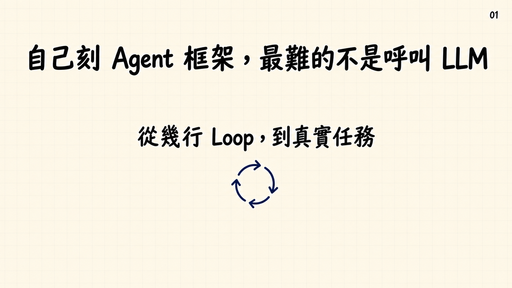
目前選用：slide-01-r2.png · 回頁碼索引標題位置較原先規劃低，但內容未被裁切，字級與主視覺可讀；供使用者確認。
檢查備註與修訂紀錄（2 版）
標題位置較原先規劃低，但內容未被裁切，字級與主視覺可讀；供使用者確認。
02我以為，把三個步驟接起來就好
待你確認 · 有版面備註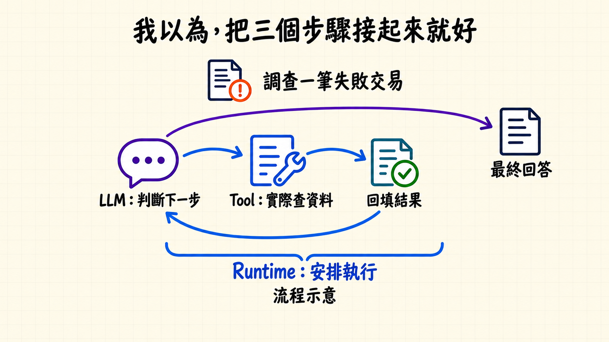
目前選用：slide-02-r3.png · 回頁碼索引循環與最終回答出口已正確；最下方「流程示意」旁註仍偏低。
檢查備註與修訂紀錄（3 版）
循環與最終回答出口已正確；最下方「流程示意」旁註仍偏低。
03會動！也確實只需要幾行程式碼
待你確認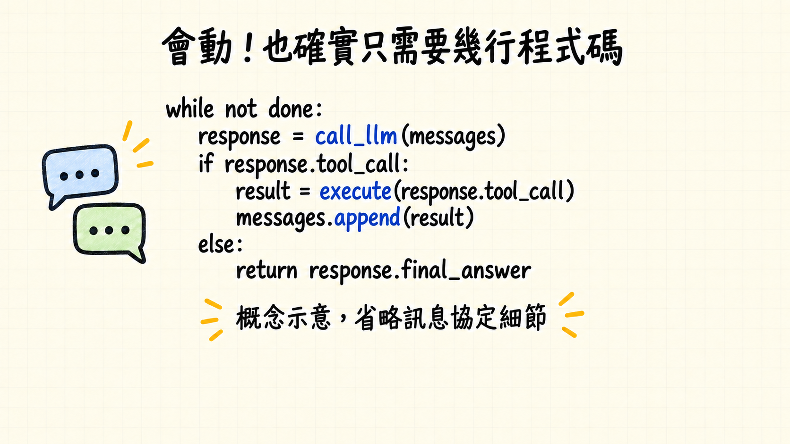
目前選用：slide-03-r4.png · 回頁碼索引檢查備註與修訂紀錄（4 版）
已人工逐張檢視主要文字、圖示語意、流程關係與可讀性；待使用者確認。
04你以為這樣就結束了嗎？
待你確認目前選用：slide-04-r1.png · 回頁碼索引檢查備註與修訂紀錄（1 版）
已人工逐張檢視主要文字、圖示語意、流程關係與可讀性；待使用者確認。
05會動之後，問題才一個個攤開
待你確認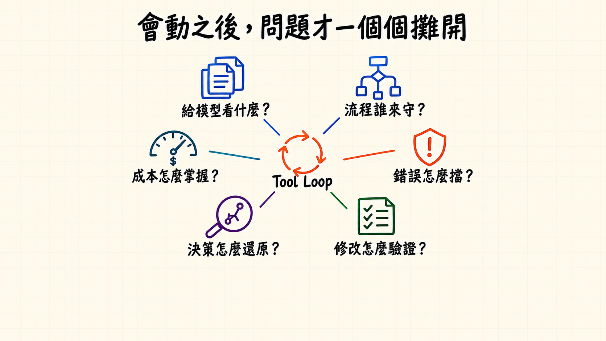
目前選用：slide-05-r3.png · 回頁碼索引檢查備註與修訂紀錄（3 版）
已人工逐張檢視主要文字、圖示語意、流程關係與可讀性；待使用者確認。
06為什麼不用別人做好的？
待你確認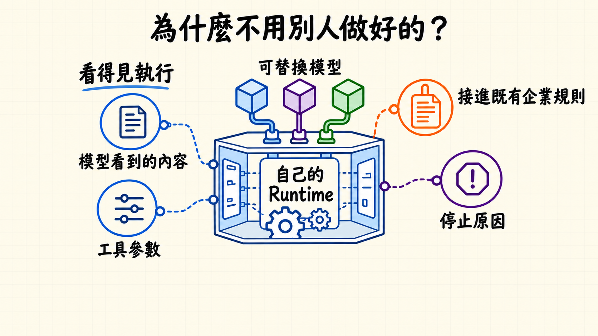
目前選用：slide-06-r2.png · 回頁碼索引檢查備註與修訂紀錄（2 版）
已人工逐張檢視主要文字、圖示語意、流程關係與可讀性；待使用者確認。
07Tool 回什麼，都要放進 Context 嗎？
待你確認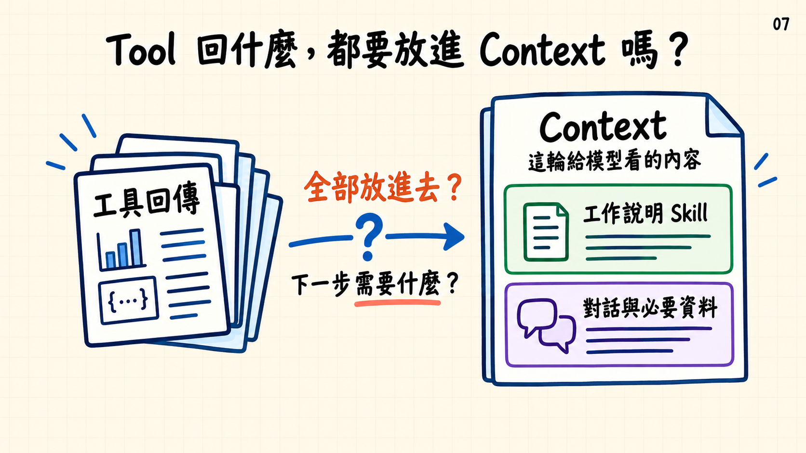
目前選用：slide-07-r1.png · 回頁碼索引檢查備註與修訂紀錄（1 版）
已人工逐張檢視主要文字、圖示語意、流程關係與可讀性；待使用者確認。
08同一份資訊，放的位置也有差
待你確認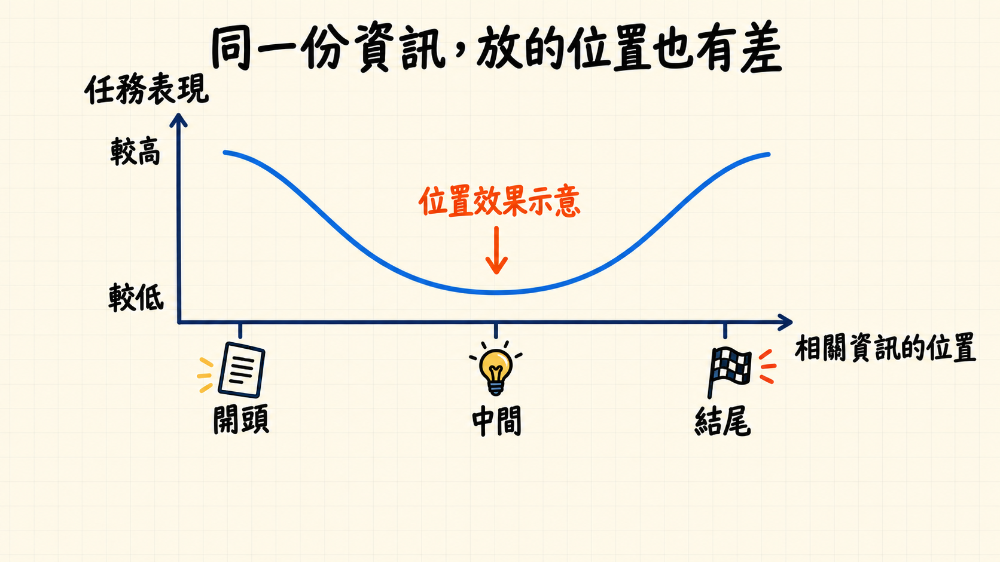
目前選用：slide-08-r2.png · 回頁碼索引檢查備註與修訂紀錄（2 版）
已人工逐張檢視主要文字、圖示語意、流程關係與可讀性；待使用者確認。
09我的測試裡，開始出現這些錯誤
待你確認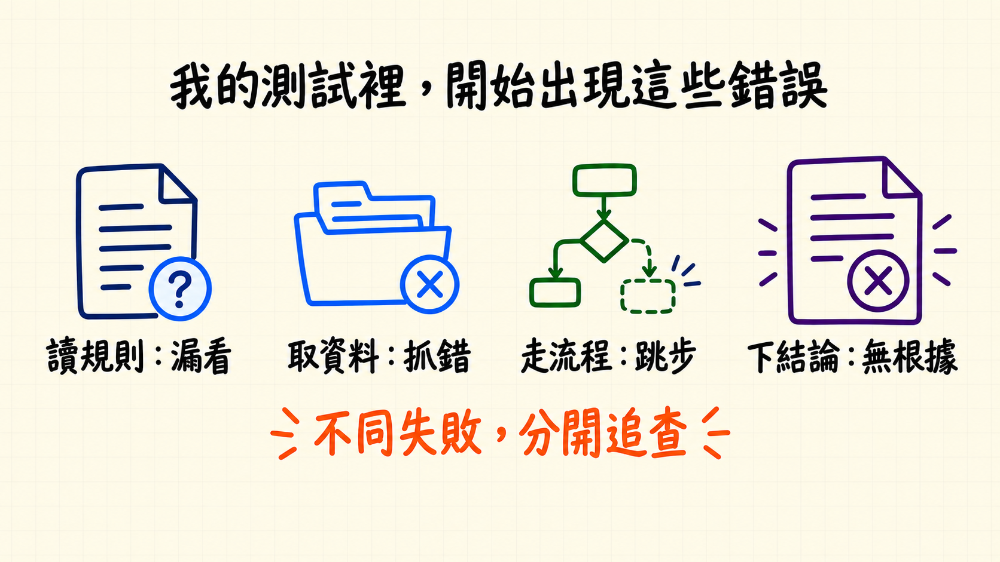
目前選用：slide-09-r2.png · 回頁碼索引檢查備註與修訂紀錄（2 版）
已人工逐張檢視主要文字、圖示語意、流程關係與可讀性；待使用者確認。
10Log 沒有說的，模型自己補上了
待你確認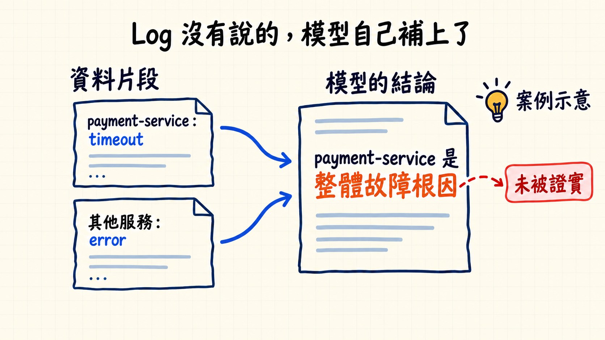
目前選用：slide-10-r2.png · 回頁碼索引檢查備註與修訂紀錄（2 版）
已人工逐張檢視主要文字、圖示語意、流程關係與可讀性；待使用者確認。
11時間接近，不代表存在因果
待你確認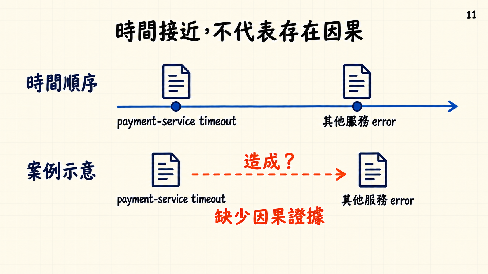
目前選用：slide-11-r2.png · 回頁碼索引檢查備註與修訂紀錄（2 版）
已人工逐張檢視主要文字、圖示語意、流程關係與可讀性；待使用者確認。
12先讓模型看到分析需要的資料
待你確認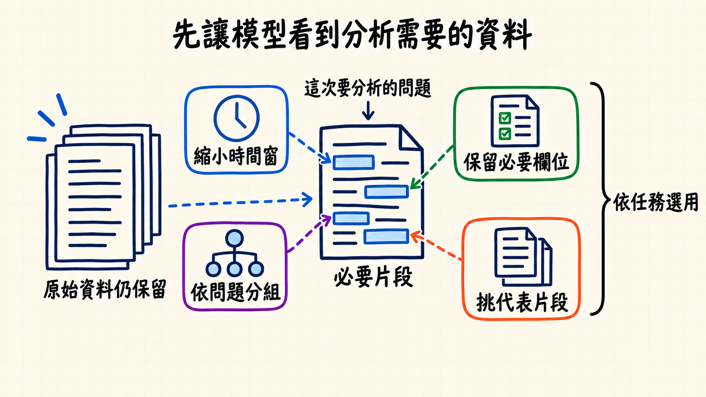
目前選用：slide-12-r2.png · 回頁碼索引檢查備註與修訂紀錄（2 版）
已人工逐張檢視主要文字、圖示語意、流程關係與可讀性；待使用者確認。
13這一步只需知道成功與否，再傳 Ref
待你確認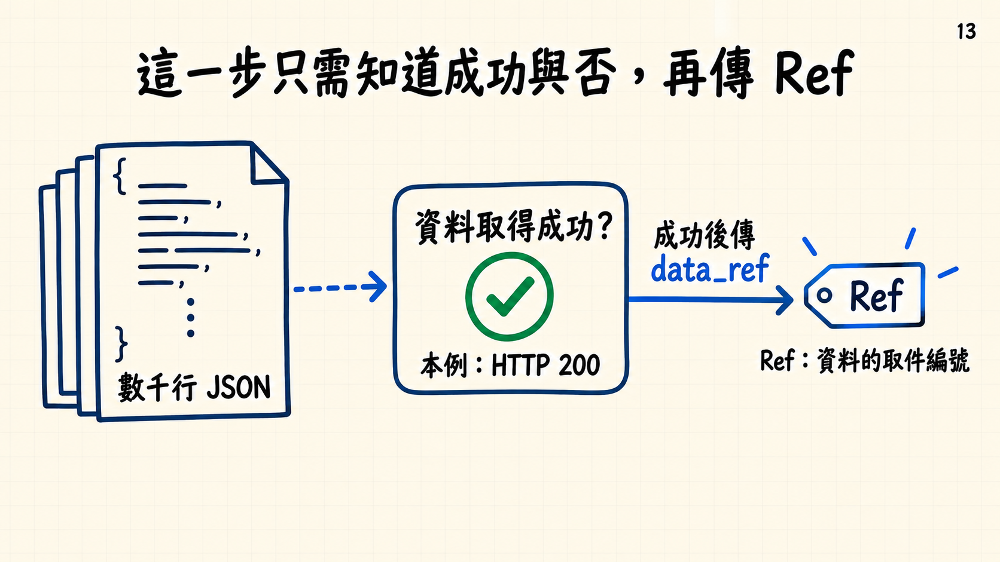
目前選用：slide-13-r1.png · 回頁碼索引檢查備註與修訂紀錄（1 版）
已人工逐張檢視主要文字、圖示語意、流程關係與可讀性；待使用者確認。
14Data Ref 讓 Tool 按需取回完整資料
待你確認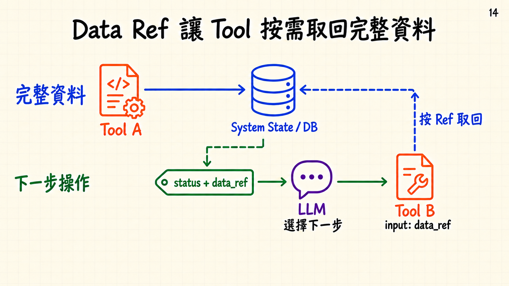
目前選用：slide-14-r2.png · 回頁碼索引檢查備註與修訂紀錄（2 版）
已人工逐張檢視主要文字、圖示語意、流程關係與可讀性；待使用者確認。
15Context 放得下，任務就做得完嗎？
待你確認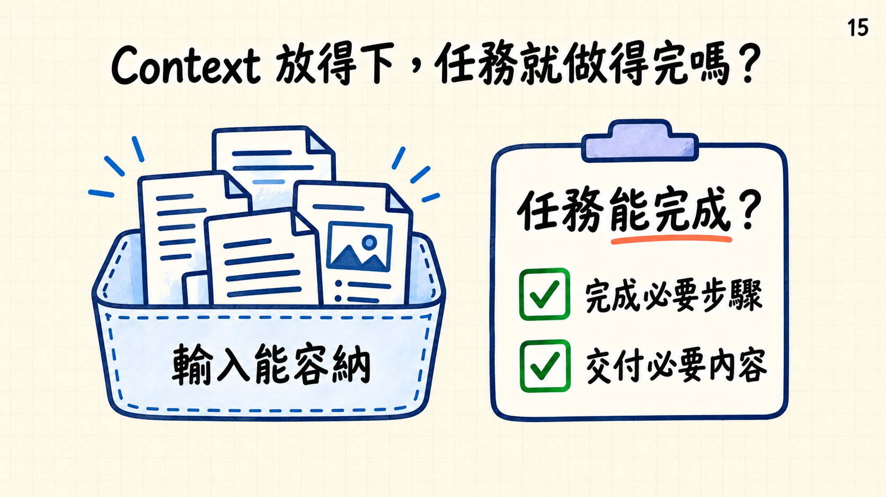
目前選用：slide-15-r1.png · 回頁碼索引檢查備註與修訂紀錄（1 版）
已人工逐張檢視主要文字、圖示語意、流程關係與可讀性；待使用者確認。
16同一個任務，完成率出現差異
待你確認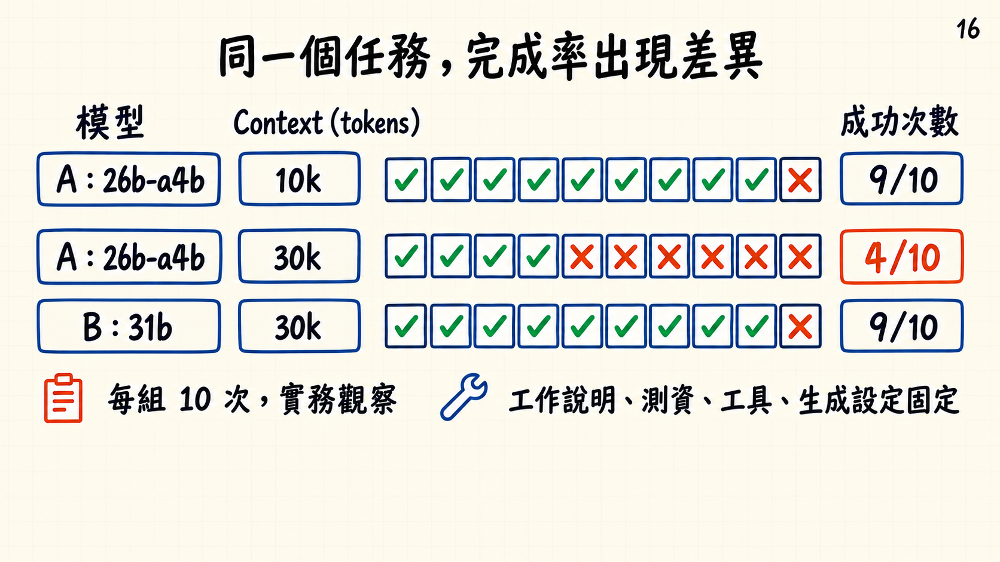
目前選用：slide-16-r2.png · 回頁碼索引檢查備註與修訂紀錄（2 版）
已人工逐張檢視主要文字、圖示語意、流程關係與可讀性；待使用者確認。
17失敗時，流程少了哪些東西？
待你確認 · 有版面備註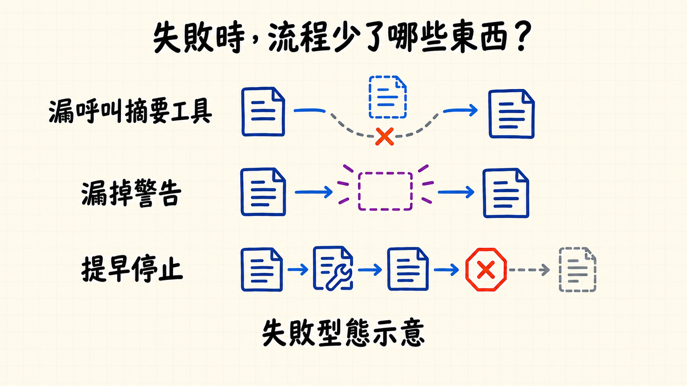
目前選用：slide-17-r2.png · 回頁碼索引三種失敗語意已修正且主要內容清楚；「失敗型態示意」旁註仍偏低。
檢查備註與修訂紀錄（2 版）
三種失敗語意已修正且主要內容清楚；「失敗型態示意」旁註仍偏低。
18任務穩定性，要連同執行條件看
待你確認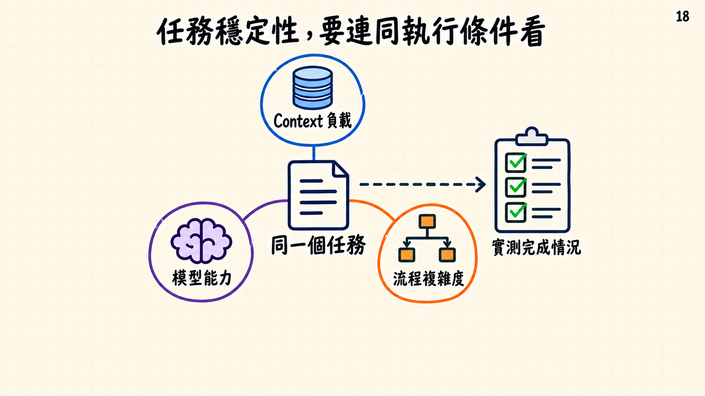
目前選用：slide-18-r1.png · 回頁碼索引檢查備註與修訂紀錄（1 版）
已人工逐張檢視主要文字、圖示語意、流程關係與可讀性；待使用者確認。
19失敗，是在什麼條件下發生？
待你確認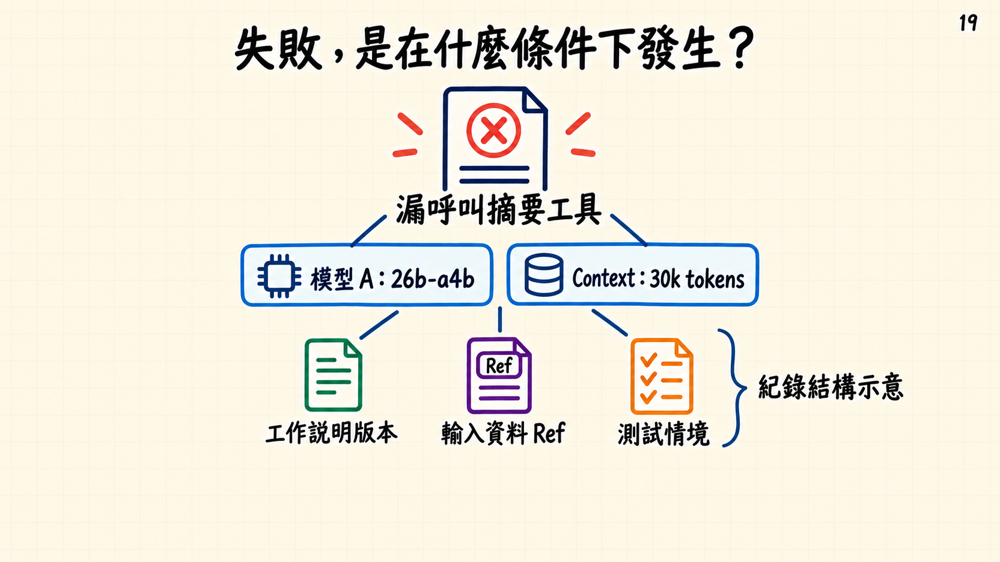
目前選用：slide-19-r1.png · 回頁碼索引檢查備註與修訂紀錄（1 版）
已人工逐張檢視主要文字、圖示語意、流程關係與可讀性；待使用者確認。
20先整理 Context，再評估模型是否適合
待你確認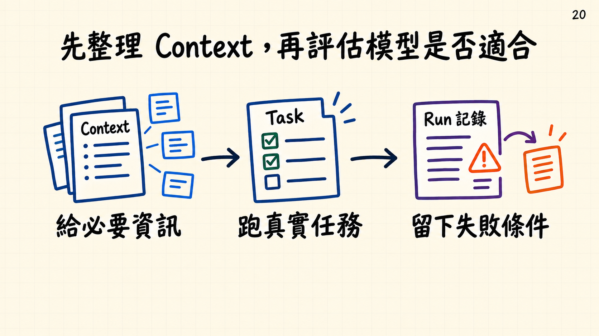
目前選用：slide-20-r1.png · 回頁碼索引檢查備註與修訂紀錄（1 版）
已人工逐張檢視主要文字、圖示語意、流程關係與可讀性；待使用者確認。
21SOP 寫清楚了，它就會照做嗎？
待你確認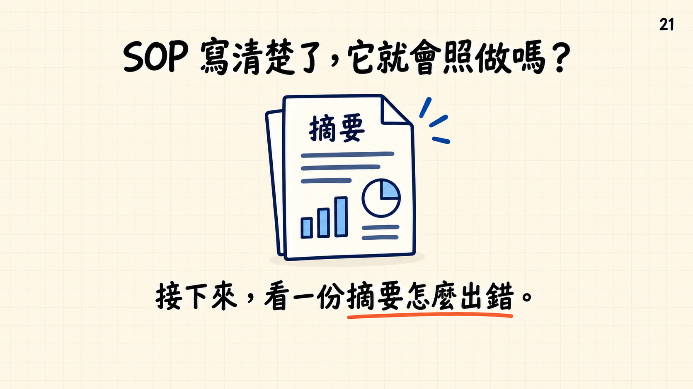
目前選用：slide-21-r1.png · 回頁碼索引檢查備註與修訂紀錄（1 版）
已人工逐張檢視主要文字、圖示語意、流程關係與可讀性；待使用者確認。
22工作說明要求：交給摘要 Builder
待你確認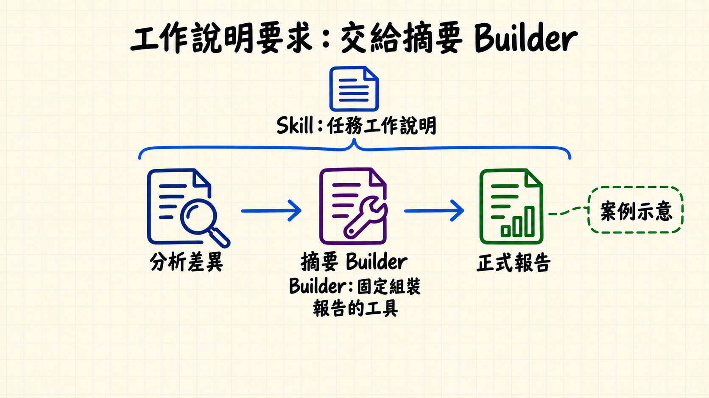
目前選用：slide-22-r2.png · 回頁碼索引檢查備註與修訂紀錄（2 版）
已人工逐張檢視主要文字、圖示語意、流程關係與可讀性；待使用者確認。
23它跳過摘要 Builder，自己交了答案
待你確認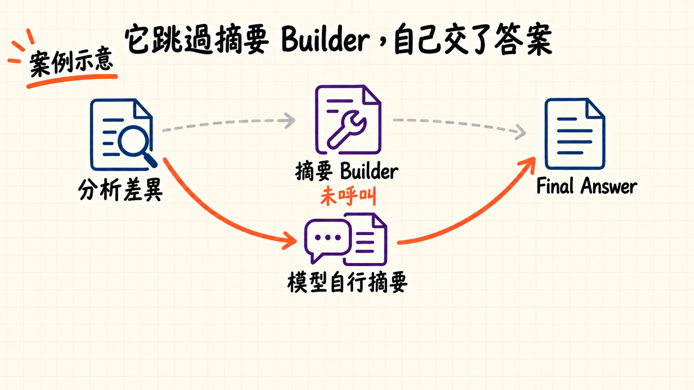
目前選用：slide-23-r2.png · 回頁碼索引檢查備註與修訂紀錄（2 版）
已人工逐張檢視主要文字、圖示語意、流程關係與可讀性；待使用者確認。
24自行摘要，漏了報告需要的內容
待你確認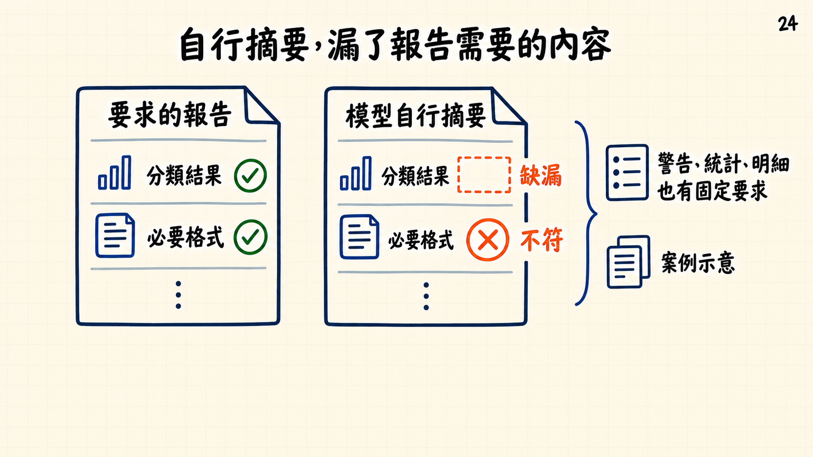
目前選用：slide-24-r1.png · 回頁碼索引檢查備註與修訂紀錄（1 版）
已人工逐張檢視主要文字、圖示語意、流程關係與可讀性；待使用者確認。
25摘要 Builder 用程式組裝固定報告
待你確認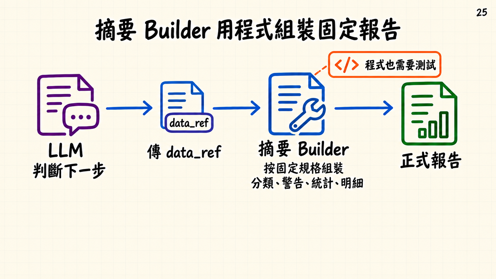
目前選用：slide-25-r2.png · 回頁碼索引檢查備註與修訂紀錄（2 版）
已人工逐張檢視主要文字、圖示語意、流程關係與可讀性；待使用者確認。
26完成條件，包含必要工具的結果
待你確認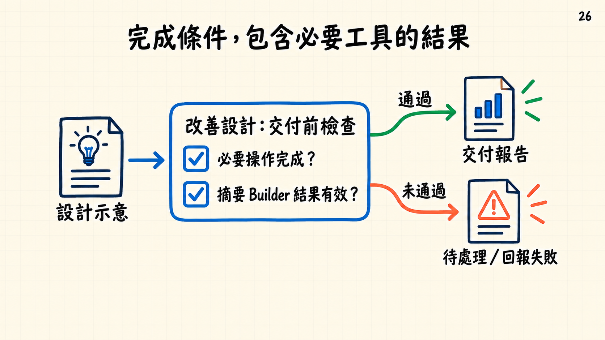
目前選用：slide-26-r1.png · 回頁碼索引檢查備註與修訂紀錄（1 版）
已人工逐張檢視主要文字、圖示語意、流程關係與可讀性；待使用者確認。
27流程都寫成程式，還需要 LLM 嗎？
待你確認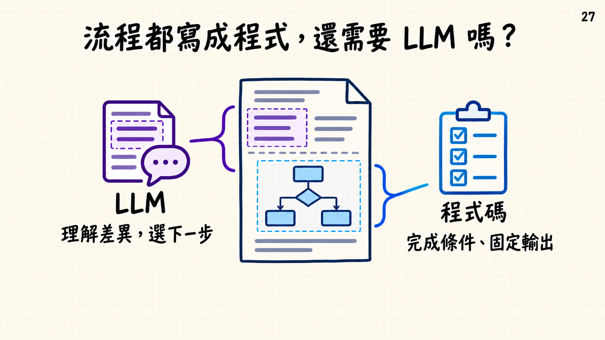
目前選用：slide-27-r2.png · 回頁碼索引檢查備註與修訂紀錄（2 版）
已人工逐張檢視主要文字、圖示語意、流程關係與可讀性；待使用者確認。
28LLM 選下一步，Runtime 檢查能不能走
待你確認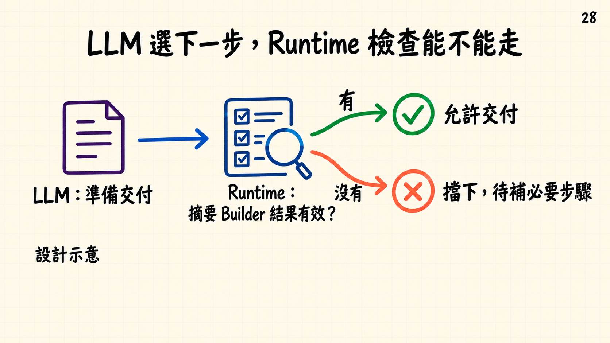
目前選用：slide-28-r1.png · 回頁碼索引檢查備註與修訂紀錄（1 版）
已人工逐張檢視主要文字、圖示語意、流程關係與可讀性；待使用者確認。
29哪些規則，不能只靠模型記得？
待你確認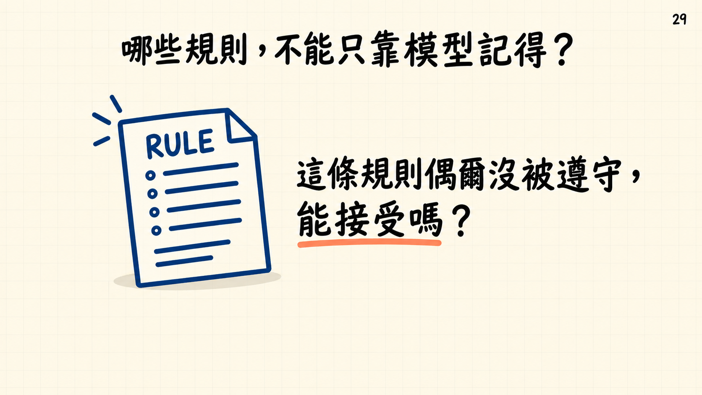
目前選用：slide-29-r1.png · 回頁碼索引檢查備註與修訂紀錄（1 版）
已人工逐張檢視主要文字、圖示語意、流程關係與可讀性；待使用者確認。
30Prompt 管偏好，Guard 守底線
待你確認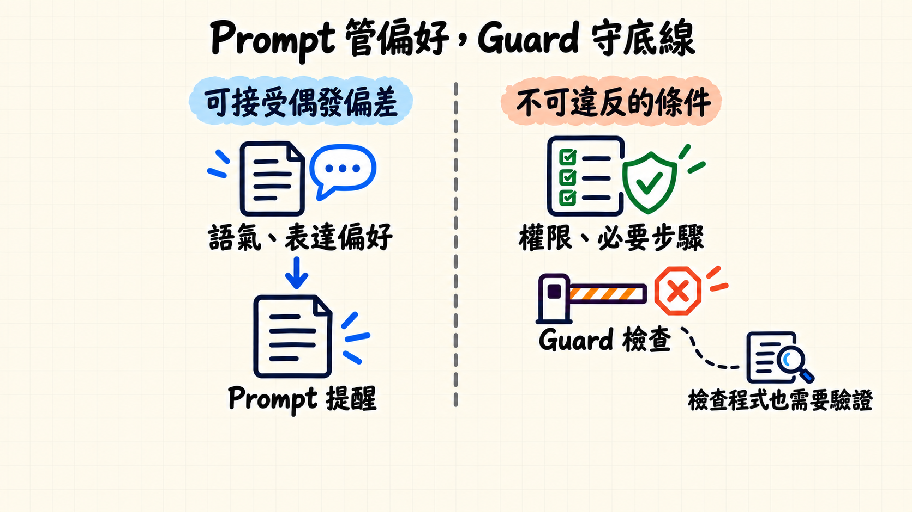
目前選用：slide-30-r2.png · 回頁碼索引檢查備註與修訂紀錄（2 版）
已人工逐張檢視主要文字、圖示語意、流程關係與可讀性；待使用者確認。
31把規則，變成真正的攔截點
待你確認 · 有版面備註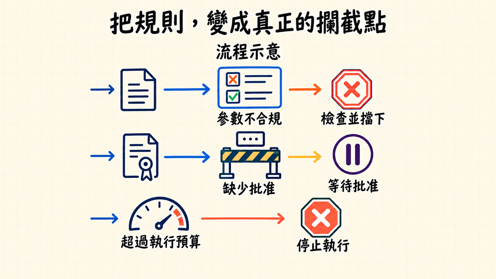
目前選用：slide-31-r2.png · 回頁碼索引三種攔截結果、單一入線與示意標記已修正；最下列標籤仍偏低。
檢查備註與修訂紀錄（2 版）
三種攔截結果、單一入線與示意標記已修正；最下列標籤仍偏低。
32查到 Log，還不能宣稱找到原因
待你確認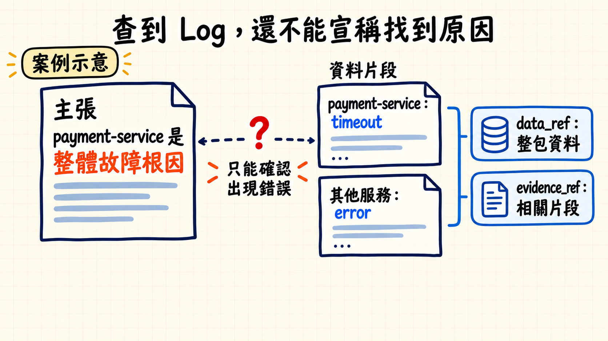
目前選用：slide-32-r2.png · 回頁碼索引檢查備註與修訂紀錄（2 版）
已人工逐張檢視主要文字、圖示語意、流程關係與可讀性；待使用者確認。
33證據不足，就保留不確定性
待你確認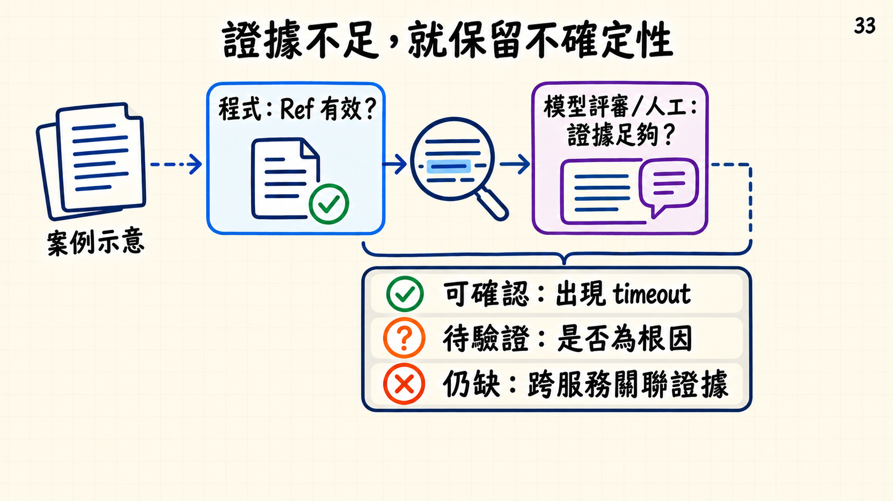
目前選用：slide-33-r2.png · 回頁碼索引檢查備註與修訂紀錄（2 版）
已人工逐張檢視主要文字、圖示語意、流程關係與可讀性；待使用者確認。
34人需要確認的是哪一件事？
待你確認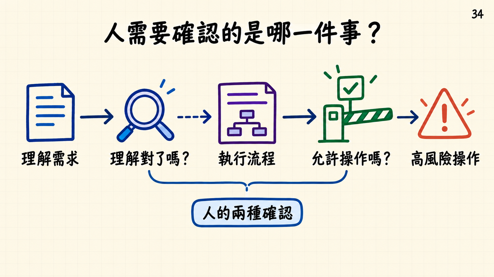
目前選用：slide-34-r1.png · 回頁碼索引檢查備註與修訂紀錄（1 版）
已人工逐張檢視主要文字、圖示語意、流程關係與可讀性；待使用者確認。
35把範圍與例外，攤開給人確認
待你確認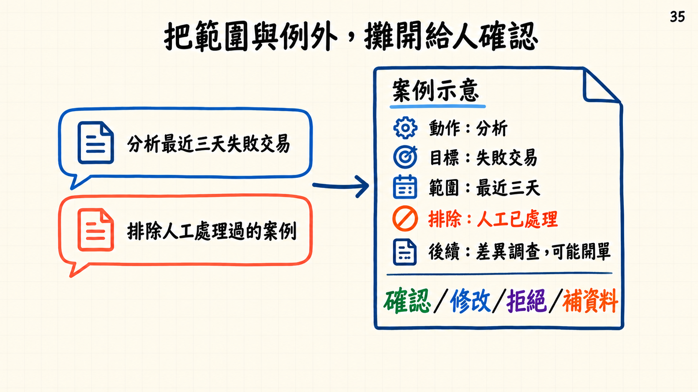
目前選用：slide-35-r2.png · 回頁碼索引檢查備註與修訂紀錄（2 版）
已人工逐張檢視主要文字、圖示語意、流程關係與可讀性；待使用者確認。
36Intent 錯了，後面全綠也沒有用
待你確認 · 有版面備註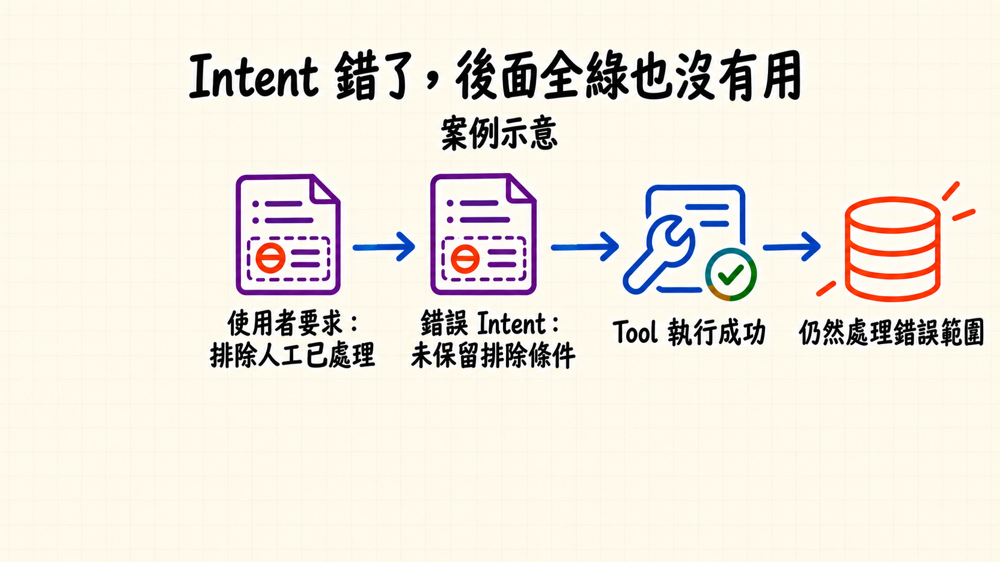
目前選用：slide-36-r3.png · 回頁碼索引案例標記已移出流程、排除條件文字已補正；四節點構圖偏右，可再微調置中。
檢查備註與修訂紀錄（3 版）
案例標記已移出流程、排除條件文字已補正；四節點構圖偏右，可再微調置中。
37高風險操作，先看懂再批准
待你確認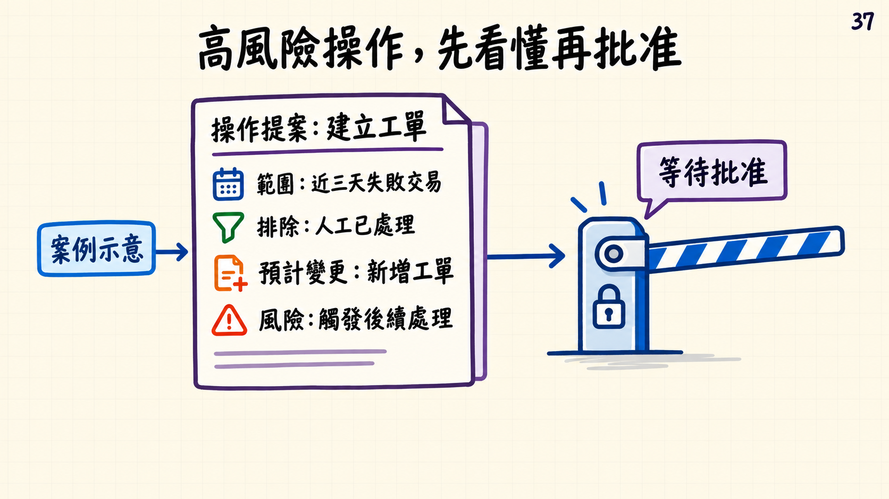
目前選用：slide-37-r1.png · 回頁碼索引檢查備註與修訂紀錄（1 版）
已人工逐張檢視主要文字、圖示語意、流程關係與可讀性；待使用者確認。
38批准後，執行前還要再檢查
待你確認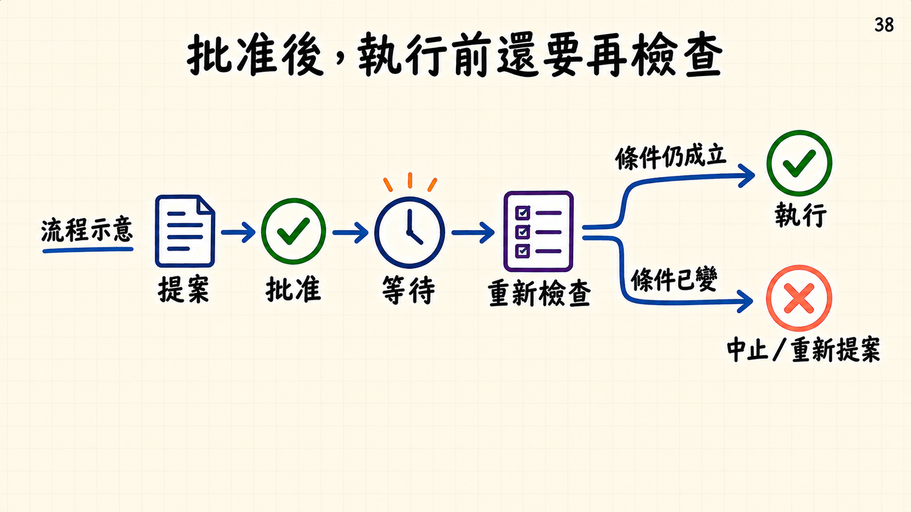
目前選用：slide-38-r1.png · 回頁碼索引檢查備註與修訂紀錄（1 版）
已人工逐張檢視主要文字、圖示語意、流程關係與可讀性；待使用者確認。
39回看那份漏了分類的摘要
待你確認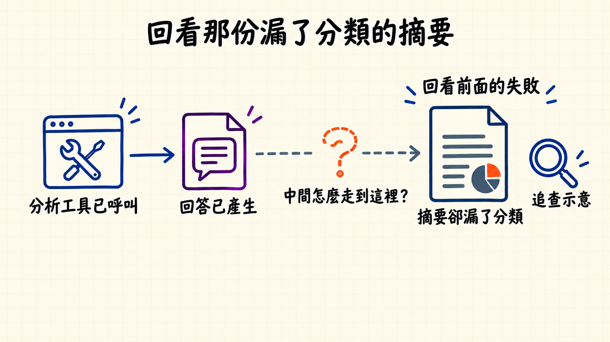
目前選用：slide-39-r2.png · 回頁碼索引檢查備註與修訂紀錄（2 版）
已人工逐張檢視主要文字、圖示語意、流程關係與可讀性；待使用者確認。
40三種紀錄，回答三種問題
待你確認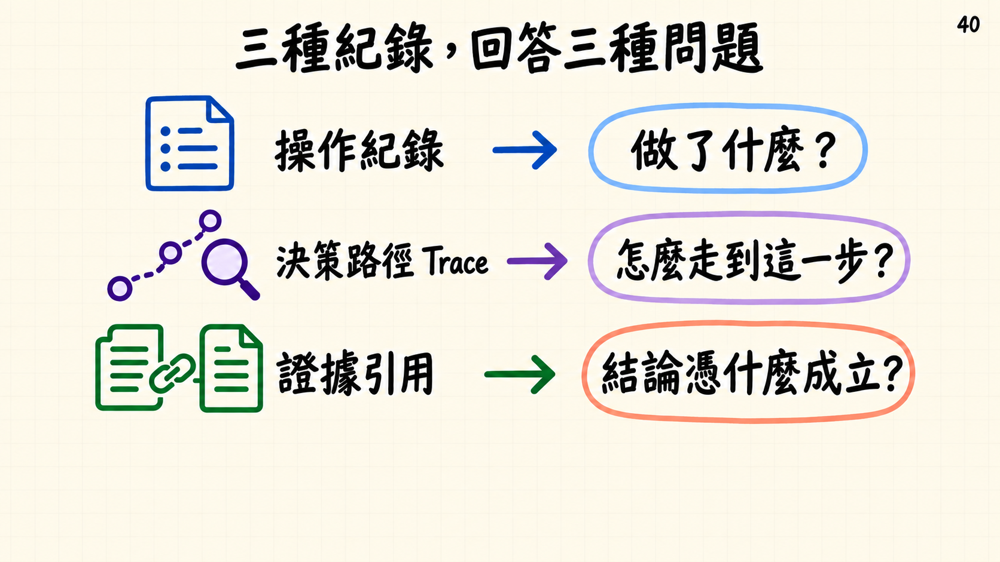
目前選用：slide-40-r2.png · 回頁碼索引檢查備註與修訂紀錄（2 版）
已人工逐張檢視主要文字、圖示語意、流程關係與可讀性；待使用者確認。
41同一次執行，把紀錄連起來
待你確認 · 有版面備註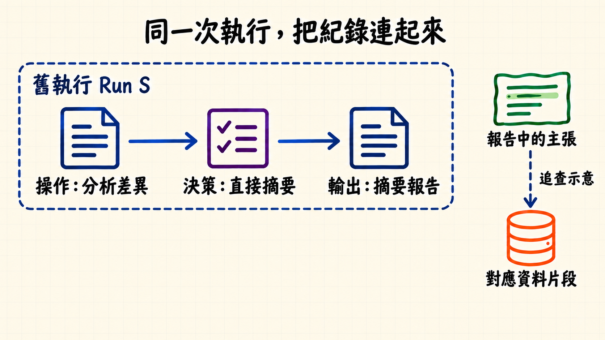
目前選用：slide-41-r2.png · 回頁碼索引錯誤循環及重複決策已移除；右側資料標籤略偏低。
檢查備註與修訂紀錄（2 版）
錯誤循環及重複決策已移除；右側資料標籤略偏低。
42停下來的那一步，當時依據是什麼？
待你確認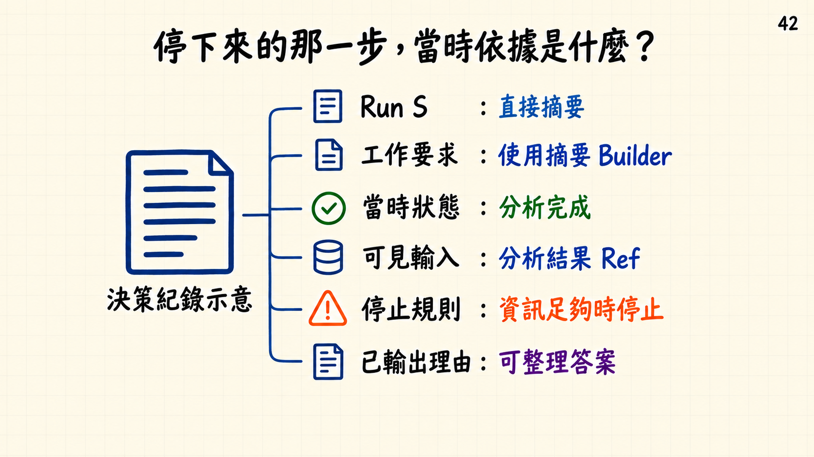
目前選用：slide-42-r1.png · 回頁碼索引檢查備註與修訂紀錄（1 版）
已人工逐張檢視主要文字、圖示語意、流程關係與可讀性；待使用者確認。
43追查歷史 Run，要看當時的 Skill
待你確認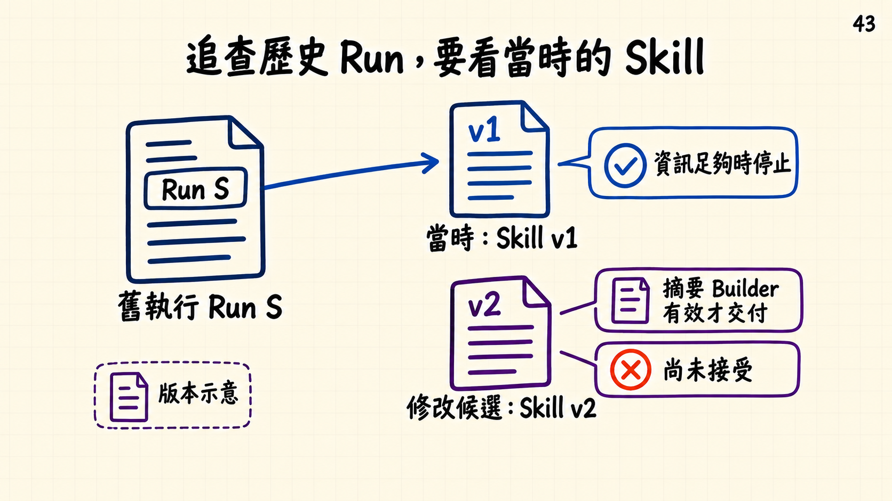
目前選用：slide-43-r1.png · 回頁碼索引檢查備註與修訂紀錄（1 版）
已人工逐張檢視主要文字、圖示語意、流程關係與可讀性；待使用者確認。
44模糊停止條件，可以提出具體修改
待你確認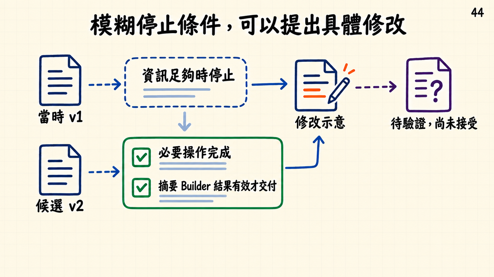
目前選用：slide-44-r1.png · 回頁碼索引檢查備註與修訂紀錄（1 版）
已人工逐張檢視主要文字、圖示語意、流程關係與可讀性；待使用者確認。
45修改 Agent，要測整次執行
待你確認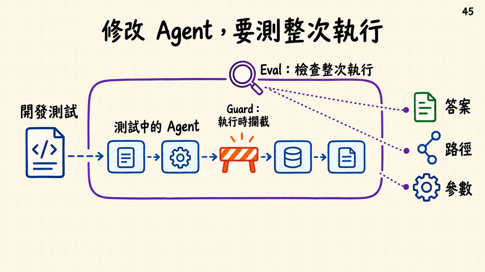
目前選用：slide-45-r1.png · 回頁碼索引檢查備註與修訂紀錄（1 版）
已人工逐張檢視主要文字、圖示語意、流程關係與可讀性；待使用者確認。
46先看報告，有沒有交付必要內容
待你確認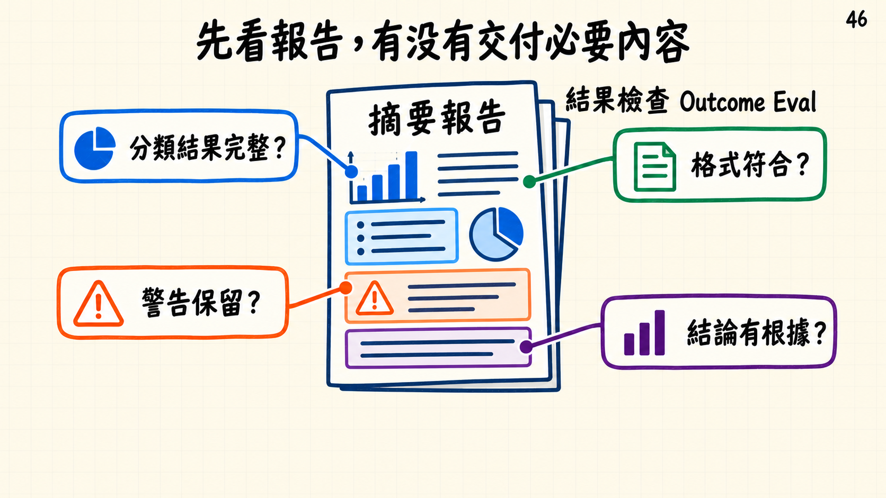
目前選用：slide-46-r2.png · 回頁碼索引檢查備註與修訂紀錄（2 版）
已人工逐張檢視主要文字、圖示語意、流程關係與可讀性；待使用者確認。
47答案看似正確，仍要檢查執行路徑
待你確認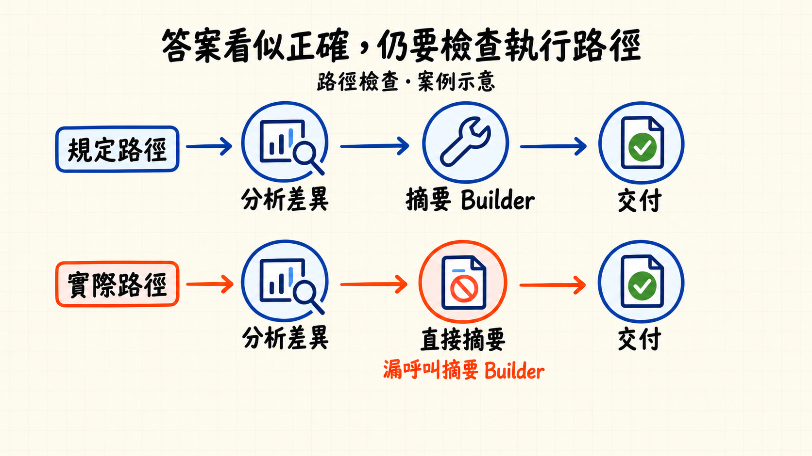
目前選用：slide-47-r3.png · 回頁碼索引檢查備註與修訂紀錄（3 版）
已人工逐張檢視主要文字、圖示語意、流程關係與可讀性；待使用者確認。
48Tool 選對了，Ref 卻沒有傳進去
待你確認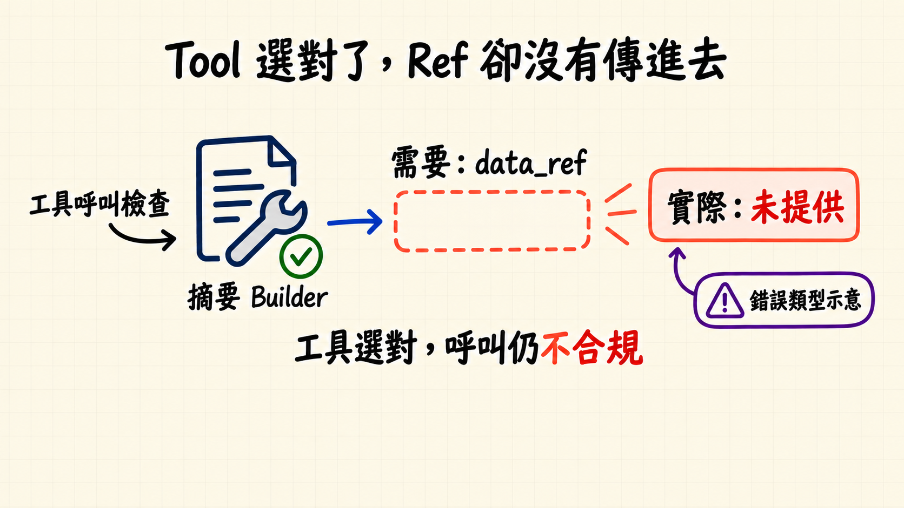
目前選用：slide-48-r2.png · 回頁碼索引檢查備註與修訂紀錄（2 版）
已人工逐張檢視主要文字、圖示語意、流程關係與可讀性；待使用者確認。
49程式檢查與模型評審，各自負責什麼
待你確認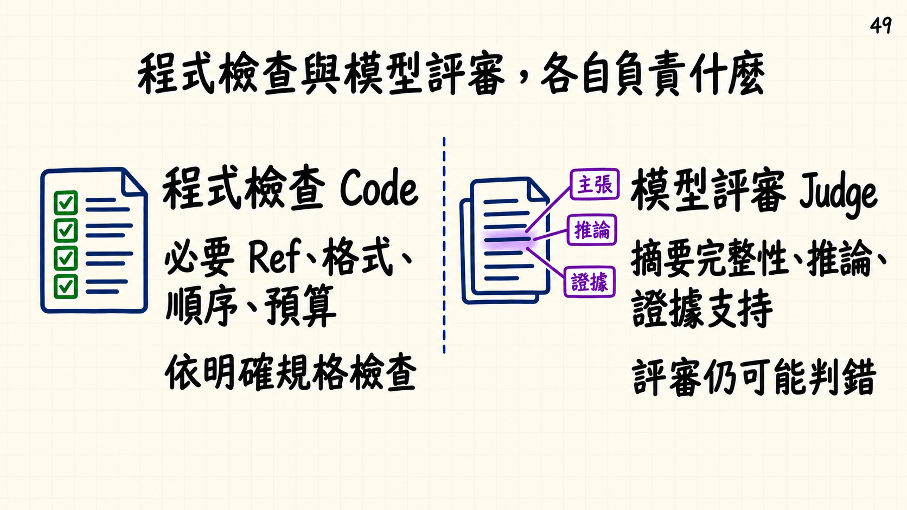
目前選用：slide-49-r2.png · 回頁碼索引檢查備註與修訂紀錄（2 版）
已人工逐張檢視主要文字、圖示語意、流程關係與可讀性；待使用者確認。
50踩過的坑，留進回歸測試
待你確認 · 有版面備註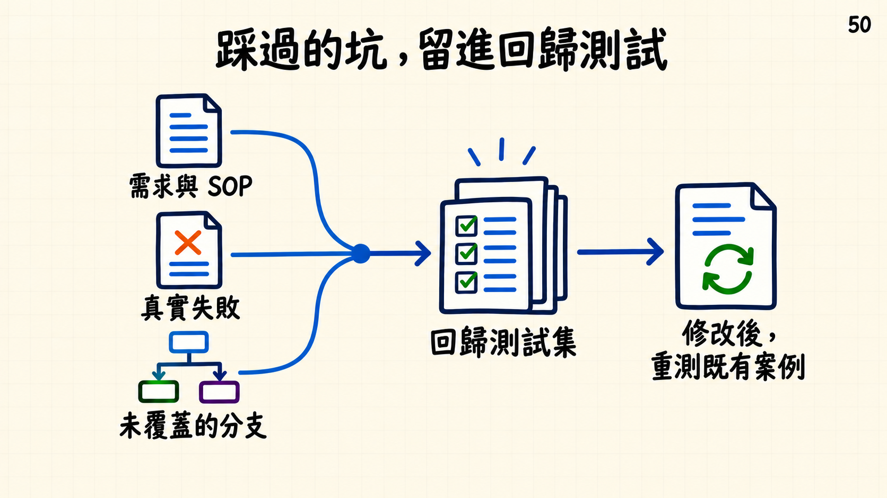
目前選用：slide-50-r2.png · 回頁碼索引三種案例來源与回歸測試關係正確；左下「未覆蓋的分支」標籤仍偏低。
檢查備註與修訂紀錄（2 版）
三種案例來源与回歸測試關係正確；左下「未覆蓋的分支」標籤仍偏低。
51同一個案例，需要重跑看穩定性
待你確認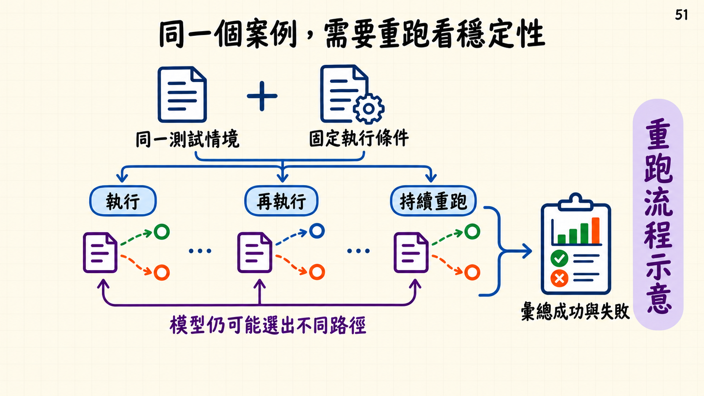
目前選用：slide-51-r2.png · 回頁碼索引檢查備註與修訂紀錄（2 版）
已人工逐張檢視主要文字、圖示語意、流程關係與可讀性；待使用者確認。
52修好這一個，卻弄壞另一個
待你確認目前選用：slide-52-r1.png · 回頁碼索引檢查備註與修訂紀錄（1 版）
已人工逐張檢視主要文字、圖示語意、流程關係與可讀性；待使用者確認。
53Agent 成本，來自整條執行鏈
待你確認目前選用：slide-53-r2.png · 回頁碼索引檢查備註與修訂紀錄（2 版）
已人工逐張檢視主要文字、圖示語意、流程關係與可讀性；待使用者確認。
54每次改 Skill，都要再付驗證成本
待你確認目前選用：slide-54-r1.png · 回頁碼索引檢查備註與修訂紀錄（1 版）
已人工逐張檢視主要文字、圖示語意、流程關係與可讀性；待使用者確認。
55我用開發 AI 產生 Skill，沒有手寫 Prompt
待你確認目前選用：slide-55-r1.png · 回頁碼索引檢查備註與修訂紀錄（1 版）
已人工逐張檢視主要文字、圖示語意、流程關係與可讀性；待使用者確認。
56每個 Skill 版本，都要帶著驗證結果
待你確認目前選用：slide-56-r1.png · 回頁碼索引檢查備註與修訂紀錄（1 版）
已人工逐張檢視主要文字、圖示語意、流程關係與可讀性；待使用者確認。
57候選修改，驗證後才接受
待你確認目前選用：slide-57-r2.png · 回頁碼索引檢查備註與修訂紀錄（2 版）
已人工逐張檢視主要文字、圖示語意、流程關係與可讀性；待使用者確認。
58AI 提出修改，人類決定接受標準
待你確認目前選用：slide-58-r1.png · 回頁碼索引檢查備註與修訂紀錄（1 版）
已人工逐張檢視主要文字、圖示語意、流程關係與可讀性；待使用者確認。
59六個問題，長成一套 Runtime
待你確認 · 有版面備註目前選用：slide-59-r2.png · 回頁碼索引六個位置與第05頁呼應，企業規則涵蓋整體、成本與Trace分組正確；下方兩個說明仍偏低。
檢查備註與修訂紀錄（2 版）
六個位置與第05頁呼應，企業規則涵蓋整體、成本與Trace分組正確；下方兩個說明仍偏低。
60Tool Loop 讓它跑起來
待你確認目前選用：slide-60-r1.png · 回頁碼索引檢查備註與修訂紀錄（1 版）
已人工逐張檢視主要文字、圖示語意、流程關係與可讀性；待使用者確認。